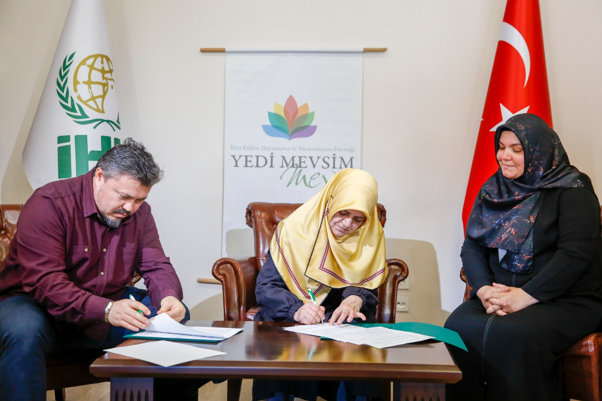
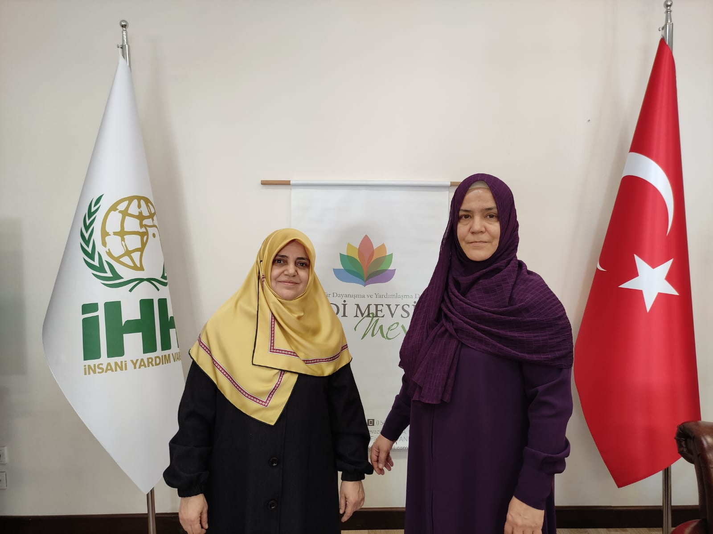
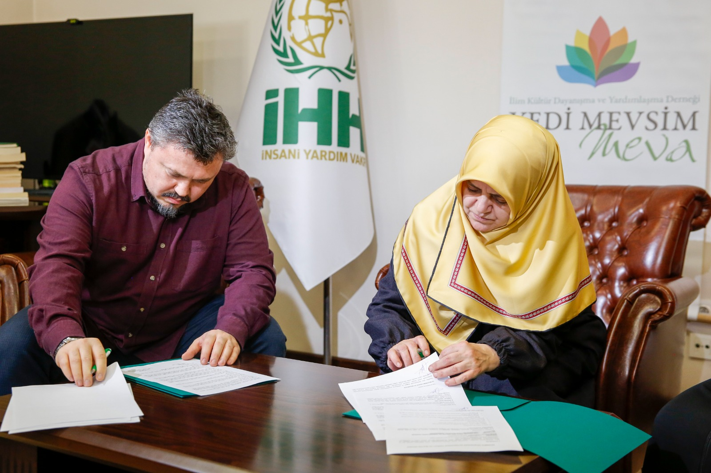

İnsanı insan kılan en kıymetli şey merhamet ve bu merhametin tezahürü olarak verebilmektir. Bizler verdikçe çoğalacağımıza inananlarız. Maksadımız; verdikçe çoğalmaktır. Tüm coğrafyalarda, tüm insanlara ve varlığa, var edenin adıyla, şifa, yurt, yuva, deva olabilmektir. Yedi sayısı, yedi kat semanın ve yedi kat yerin sahibiyle olan bağımızı hatırlattığı gibi, niyetimizin, hedefimizin, gayretimizin sınırlamalardan azade, seçmeci olmayan bütüncül yönünü de, ifade etmektedir. Meva, ise niyetimizin kelamdaki tezahürü olarak; sığınılacak yer, yurt ve mesken anlamlarına gelmektedir.
Müslüman çift dünyalı yaşayan, dünya için ahiretini, ahiret için dünyayı görmezden gelmeyendir. Biz inanıyoruz ki; insan sadece kendi için yaşayarak bu dünyada var olmamalı, sadece bu dünya için yaşamamalı, insanın ufku, inancı bu dünyayı aşmalı, solmaz ve eskimez hedefler koymalı kişi kendisine, varacağı yeri ve yönü buna göre belirlemeli. Bizler bütün kainat ile ‘BİR’ olunca ahiret hayatımızın güzel olacağına, iyiliğin bu dünyada ahiretin, cennetin anahtarı olduğuna inananlarız. Ve inancımızla çoğalıp, büyümek için yola çıktık.
Hedeflerimiz; insanlığın iyiye ve iyiliğe ulaşmasıdır; iyilerin ve iyiliğin çoğalmasıdır. Mazlumun boynu büküklüğünün giderilmesi, gözlerinin, yüzünün, gönlünün gülmesidir, iyiye ve iyiliğe, mutluluğa, ait olma ve unutulmama duygusuna aşina olmasıdır. Elimizin erdiği, gözümüzün gördüğü, kulağımızın işittiği ve nefesimizin yettiği her mekan, zaman ve zeminde, maddi- manevi iyilik ve yardımlarda bulunmak ve bu hali sadece bize ait değil, yaygınlaşmış bir iyilik hareketine dönüştürmektir. Bir BESMELE çektik, bir niyet aldık, bir adım attık, bir yola çıktık, bizden önce bu yollardan geçmişlerin izlerine baktık, istikamet eyledik, bir bayrak da biz alıp yürümeye durduk. Arzumuz, umudumuz, duamız odur ki, o bayrak elden ele nesillerce çok daha ileriye taşınsın, ebede intikal eylesin, taa kıyamete kadar daim olsun.
Biz; Yedi Mevsim Meva’yız. Biz kimiz? Yedi kat gök ve yerin sahibine inananlarız. Biz kimiz? Biz bedenlere ve gönüllere sığınılacak yer olmaya aday olanlarız. Biz Kimiz? Biz yedi mevsim gönüllere muhabbet ekmeye çalışanlarız. Biz kimiz? Yedi denize ulaşanların torunlarıyız. Biz kimiz? Yedi kıtadaki tüm insanlığa hayır isteyen, hayır dileyenleriz


